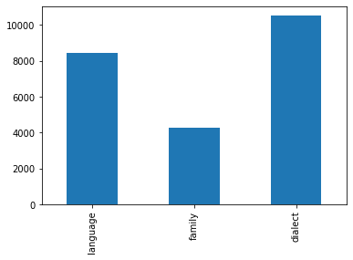
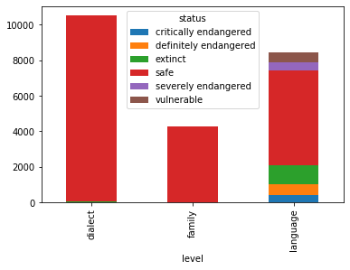

On the occasion of the International Mother Language Day (21st February), I did and exploratory analysis and data visualisation of the World Language Family Map dataset with pandas and matplotlib.
Setup
The first step in the exploratory analysis is to read in the data and get an overview of the features: how many rows and columns are included and what are the names of the columns.
import pandas as pd
df = pd.read_csv('languoid.csv')
df.head(10)
df.shape
list(df.columns)
The dataset contains 23243 observations and 18 language features. For this project I am interested in only three features: level, name, and status. To make things easier, I select only these three features and create a new dataframe with the subset data:
lns_df = df[['level', 'name', 'status']]
Exploratory Analysis
Overview
I start the exploratory analysis with an overview of the selected features in lns_df, so I want to see how many unique values each feature has:
lns_df['level'].unique()
Level is a categorical variable with three levels:
- dialect: a particular form of a language which is peculiar to a specific region or social group.
- family: a group of languages related through descent from a common ancestral language or parental language.
- language: an official language spoken in a region.
lns_df['status'].unique()
Status is a categorical variable with 6 levels. They are based on UNESCO’s Language Vitality and Endangerment framework that establishes six degrees of vitality/endangerment. From safest to extinct, these are:
- safe: language is spoken by all generations; intergenerational transmission is uninterrupted.
- vulnerable: most children speak the language, but it may be restricted to certain domains (e.g., home).
- definitely endangered: children no longer learn the language as mother tongue in the home.
- severely endangered: language is spoken by grandparents and older generations; while the parent generation may understand it, they do not speak it to children or among themselves.
- critically endangered: the youngest speakers are grandparents and older, and they speak the language partially and infrequently.
- extinct: there are no speakers left.
Language level
Next, more specifically I want to see how many language families, languages, and dialects are in the dataset:
lang_sum = pd.value_counts(df['level'].values, sort=False)
There are 8444 language families, 4268 languages, and 10531 dialects. It makes sense that there are way more dialects than languages and language families, since a language family encompasses several languages, which in turn have different dialects. It’s easier to put these numbers into perspective by visualising them:
import matplotlib.pyplot as plt
%matplotlib inline
lang_sum.plot(kind='bar')

Language status
Now let’s see the total number of languages in each status:
status_sum = pd.value_counts(lns_df['status'], sort=True)
status_sum.plot(kind='pie')
Over 80% of languages in the dataset are safe, which leaves 14% of data on endangered languages to analyse. Of these, most are extinct, and the fewest are critically endangered. Now let’s get a summary table of languages in each level by status:
level_status = pd.crosstab(df.level, df.status)
level_status.plot(kind='bar', stacked=True)

Endangered languages
After getting an overview of the language status and level situations, I want to see what specific languages are in each group. Specifically, I was curious what language families were extinct:
ext_fam = df[(df.level == 'family') & (df.status == 'extinct')]
ext_fam_names = ext_fam[['name']]
There are three extinct language families: Chimakuan, Djiwarli-Thiin, and Garrwan.
Next steps
This exploratory analysis is only a starting point, there are many other questions you can explore from this dataset. For example, find what dialects are critically endangered, what is the geographic distribution of endangered languages, or maybe analyse and visualise the data with other libraries than pandas and matplotlib. Have a look at my Jupyter notebook and play around with the data!